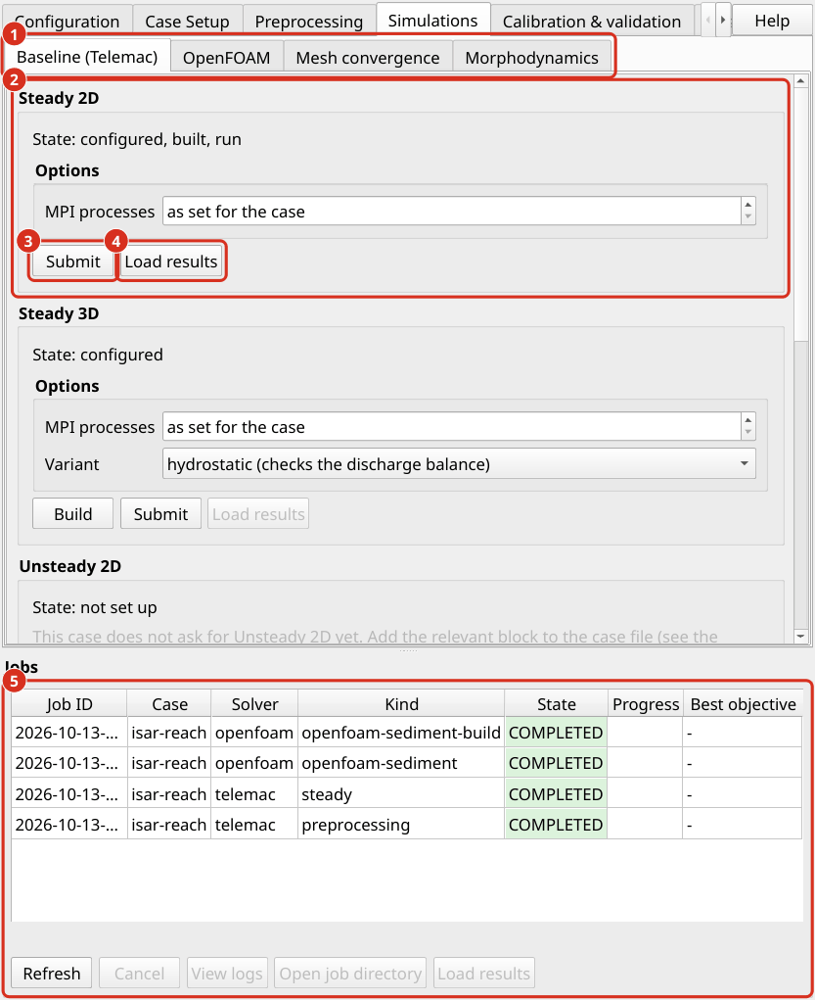
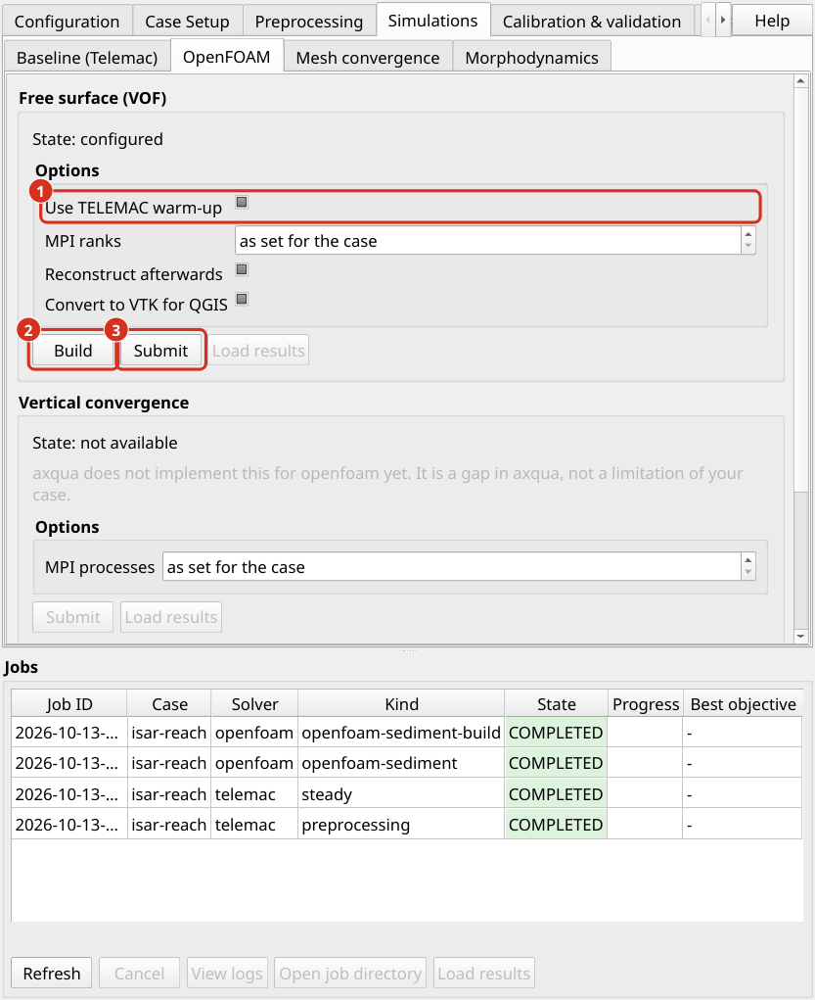

Hydraulic simulations
A hydraulic simulation computes water depths and flow velocities for the discharge of the case. aXqua runs hydraulic simulations in a fixed order, from the fastest model to the most detailed one, and each model starts from the result of the previous one.
aXqua warm-up concept
At the beginning of a simulation, nothing is known about the flow: the riverbed is dry, and the model first has to fill the reach with water until the outflow equals the inflow. This filling is of no interest in itself, but it consumes computing time. The more detailed a model is, the more expensive the filling becomes.
aXqua therefore lets the cheapest model do this work. The sequence is:
TELEMAC-2D dry run. The depth-averaged model starts on the dry riverbed and runs until the flow is steady. It typically takes minutes to a few hours.
TELEMAC-3D (optional). The 3D model starts from the 2D result. The reach is already filled, and only the vertical distribution of the velocity has to develop.
OpenFOAM (optional). The OpenFOAM model starts from the TELEMAC result. The position of the water surface, the wetted area and the velocities are taken from it.
The TELEMAC run that precedes an OpenFOAM simulation is called the warm-up. It has three effects on the OpenFOAM model: the cells below the water surface start filled with moving water, the top of the mesh is placed shortly above the water surface so that few cells contain only air, and the mesh is limited to the wetted part of the reach. If the case has no steady 2D result yet, aXqua runs a coarse TELEMAC simulation on its own for this purpose, which takes about one minute for a small reach.
Watch the TELEMAC-2D dry run setup on YouTube
The warm-up is active by default and should not be disabled. Without it, OpenFOAM starts with a flat lid high above the terrain, the mesh contains many times more air cells, and the filling of the reach has to be computed by the most expensive model. In the plugin, the warm-up is the check box Use TELEMAC warm-up on the sub-tab OpenFOAM of the tab Simulations (OpenFOAM). In the case file, it is the setting openfoam.pre_run.enabled, which is enabled by default.
TELEMAC dry runs 2D/3D
Watch this Tutorial on YouTube
A dry run is a simulation that starts from a dry riverbed (Initial conditions).
2D. After preprocessing, click Submit in the box Steady 2D on the tab Simulations > Baseline (Telemac) of the plugin. The run appears in the job list below the tabs with its progress. In a terminal, the command is:
axqua submit <case-file> --kind steady


The tab Simulations, sub-tab Baseline (Telemac). (1) The sub-tabs of the tab Simulations. (2) The box Steady 2D with its state. (3) Submit starts the simulation. (4) Load results adds the result to the map. (5) The job list with the state and the progress of every job.
When the run has finished, aXqua evaluates whether the flow is steady. It reads the discharge through every open boundary from the output of TELEMAC and writes the following files into axqua-case/simulation/:
File |
Content |
|---|---|
|
Discharge through each open boundary over the simulated time. |
|
Relative difference between inflow and outflow over the simulated time. |
|
Wetted area, divided into flowing water, stagnant thin water films and isolated puddles. |
|
Water surface near the outflow boundary, with a note whether the prescribed water level dams up the flow or draws it down. |
The run is steady when the relative difference between inflow and outflow stays below hydrodynamics.flux_tolerance. If this is not the case at the end of the run, increase hydrodynamics.duration and repeat the run. The wetting report complements this criterion: a simulation can have balanced discharges and still show water in places where the real reach is dry. Large areas of stagnant film usually indicate a start with too much water or a downstream water level that is too high.
Load results adds the result (r2d.slf) to the QGIS project as water depth and flow velocity layers.
3D. A TELEMAC-3D simulation requires the steady 2D result. In the box Steady 3D on the same tab, Build writes the 3D steering files and Submit starts the run. aXqua determines the number of vertical layers from the water depth and the cell size. The build provides two variants. The hydrostatic variant is faster and is run first, to verify that inflow and outflow balance in 3D as well. The non-hydrostatic variant (hydrodyn) additionally resolves vertical accelerations, which matter at steep changes of the bed. The option Variant of the box selects which of the two Submit starts, and Load results adds the depth-averaged result to the map. In a terminal:
axqua submit <case-file> --kind build-3d
axqua submit <case-file> --kind steady-3d
axqua submit <case-file> --kind steady-3d --option variant=hydrodyn
The number of vertical layers is a choice of its own, which is examined with a separate study (Vertical convergence tab). In a shallow reach with a fine mesh, only few layers fit over the water depth, and a 3D TELEMAC simulation then adds little information to the 2D result.
TELEMAC hotstarts
A hotstart is a simulation that continues from the final state of a previous simulation instead of starting dry. The reach is then already filled, which saves the filling time in every subsequent run.
Steady hotstart. When the dry run has reached a steady state, aXqua writes the steering file hotstart2d.cas next to the model. It continues from the result of the dry run with unchanged boundary conditions. The calibration uses this file: each of its many runs changes a parameter slightly and starts from the steady state (Calibration & validation).
Unsteady hotstart (varying discharge). To simulate a flood wave, enter a discharge time series under boundaries.inflow (Liquid boundaries) and repeat the preprocessing. aXqua then additionally writes the steering file unsteady2d.cas. The unsteady run starts from the steady result, so that the reach is filled when the flood wave arrives. The steady discharge of the case (boundaries.prescribed_flowrate) should therefore equal the first value of the time series. Start the run with Submit on the Unsteady 2D tab, where the option Run in 3D selects the 3D model, or in a terminal:
axqua submit <case-file> --kind unsteady
axqua submit <case-file> --kind unsteady --option mode_3d=true
The duration of the unsteady run follows from the time series. With the outflow condition stage_discharge, the downstream water level follows the rating curve during the flood wave.
OpenFOAM
An OpenFOAM simulation resolves the flow in three dimensions together with the water surface. It is required where the vertical structure of the flow matters, for example at structures or in a fish pass. The settings are described in OpenFOAM choices.
Build. Go to the tab Simulations, sub-tab OpenFOAM. The box Free surface (VOF) contains the check box Use TELEMAC warm-up. As long as the check box is not changed, the case file decides, in which the warm-up is enabled by default. Leave it unchanged or ticked (aXqua warm-up concept) and click Build. aXqua runs the warm-up if the case has no steady 2D result yet, creates the mesh and writes the OpenFOAM case into
axqua-case/openfoam/. With the box cleared, the model is built without a TELEMAC result, and OpenFOAM has to fill the dry riverbed itself.Run. Click Submit. The run has two stages: a short first stage with a small time step, in which the water surface settles, and the main stage. The progress display shows the Courant number (
Co) and the time step (dt). In a healthy run, the time step stays near a constant value. A time step that falls by orders of magnitude indicates a problem, typically air that is accelerated to unrealistic velocities.Evaluate. After the run, aXqua reports the discharge of water at the inflow and the outflow and compares their relative difference with
hydrodynamics.flux_tolerance, which is the same criterion as for TELEMAC. Water that leaves the model through its top is part of this balance and is reported as a share of the discharge. aXqua also reports whether water reached the lid or the lateral limits of the mesh. In that case, the mesh has constrained the flow, andopenfoam.freeboardoropenfoam.wet_marginhas to be increased. Water can also leave through the top while the water surface stays well below it, as traces of water that the air carries away from a smeared surface (OpenFOAM choices).


The tab Simulations, sub-tab OpenFOAM. (1) The check box Use TELEMAC warm-up. In the state shown, the case file decides, in which the warm-up is enabled by default. (2) Build creates the OpenFOAM model. (3) Submit starts the simulation.
In a terminal, the commands are:
axqua submit <case-file> --kind openfoam-build
axqua submit <case-file> --kind openfoam-run
Before the first vof run of a new case, run the model once in the mode rigid-lid with a coarse mesh (cell_size_factor of 3 to 5). This run takes minutes and reveals most setup errors.
A new run or a new build replaces the earlier results. A run starts from the initial state. Before it starts, aXqua therefore moves the results of the earlier run into the folder previous-run/ in the folder of the OpenFOAM model: the time folders, the processor folders of a parallel run, postProcessing/ with the discharge records, VTK/, depth-averaged.slf and the reports. A new build does the same, because a result cannot be continued on another mesh. Only one earlier run is kept, and the next run or build replaces the folder, so copy a result that is to be kept to another place first. A parallel run that was not reconstructed keeps its result in the processor folders. The predefined figures read it from there, and ParaView reads it with the case type Decomposed Case.
The result seen from above. After a run, aXqua sums the water of each column of the mesh and writes the water depth and the depth-averaged velocity of the last time step into the file depth-averaged.slf in the folder of the OpenFOAM model. The file has the same variables as a TELEMAC result. Load results on the sub-tab OpenFOAM adds it to the map with the same styles as a 2D result, so that the two models can be compared directly. The complete three-dimensional result is opened in ParaView with the file case.foam in the same folder.
Starting a fine model from a coarse one. A three-dimensional model often has a lower or higher resistance than the 2D model it starts from, so that the water level of the whole reach has to adjust. That takes thousands of seconds of simulated time, and on a fine mesh, this costs days. It is faster to let a coarse model reach the steady state first and to start the fine model from its result:
Build and run the model with a large
cell_size, for example 2 m with 8 layers, and a longend_time. Check in the report that inflow and outflow agree.Build the fine model with the option
hotstartset to the filedepth-averaged.slfof the coarse model, and run it. In a terminal:axqua submit <case-file> --kind openfoam-build --option hotstart=<folder of the coarse model>/depth-averaged.slf axqua submit <case-file> --kind openfoam-run
The coarse and the fine model need different folders. The entry project.openfoam_dir in the case file of the coarse model gives it its own folder, while both case files share the TELEMAC model.
On the Isar example, the model with 2 m cells and 8 layers (56,000 cells) computed 3000 s of simulated time in 2.3 hours on 8 processor cores. The model with 1 m cells and 14 layers (290,000 cells) started from its result computed 1500 s in 9.1 hours on 16 cores; its outflow stayed within 1 % of the inflow after 500 s. Both ran while another simulation used the other half of the computer.